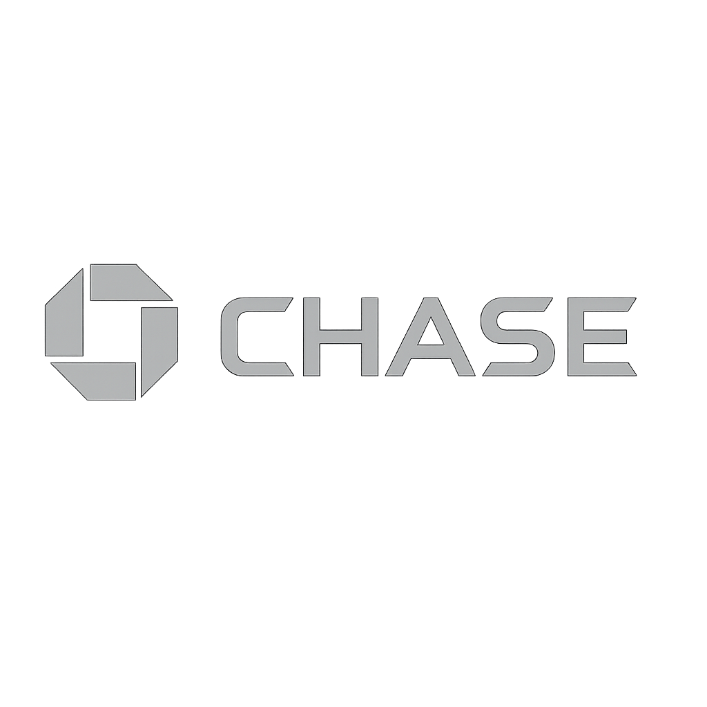

We drive your job search with strategy, momentum, and a personalized touch—while you focus on your next interview.
Every action is customized to your career goals, ensuring targeted applications and meaningful connections.
Our silent momentum approach submits hundreds of roles monthly, maximizing your visibility seamlessly.
Mock interviews, personalized feedback, and insider tips keep you confident and prepared for every call.
We guide negotiation and follow‑up to help you secure the best compensation and role fit.
Jobs Applied Monthly / Candidate
Average Client Rating
Interview Success Rate
Candidates Served (as of 3/25)
“I was so tired and frustrated after getting rejected again and again, even though I had the skills. Then one of my seniors told me about Luminary. They started applying to 2500+ jobs per month on my behalf, and within just 10 days, I started getting interview calls. In 1.5 months, I had 3 offers in hand! Their dedication and personal support made me feel like I’m not alone in this journey.”
“I had no idea how to present myself professionally. My resume and LinkedIn were very basic. Luminary completely transformed my profile, gave me confidence, and the best part—they actually care. It’s not like other random services. They followed up daily and helped me with interview prep also. I never felt this supported before!”
“As an international student, it was hard to get responses. But Luminary really understood my situation. They applied non-stop, customized my resume for each job, and within 3 weeks I got shortlisted by 8 companies. I was shocked, honestly. I didn’t even know such a service existed. Full paisa vasool!”
“I used to apply on my own and hardly got any replies. After joining Luminary, they took complete ownership of my job search. Within one month, I had back-to-back interviews. What I loved most was their honesty, follow-ups, and the way they motivated me when I was feeling low. For me, it felt like having a big brother guiding you throughout.”
“I honestly thought I’ll have to go back to India. No matter how many jobs I applied myself, I was not even getting callbacks. Then a friend forwarded Luminary’s link. After joining, they started applying to 2500+ jobs every month—I didn’t even know it was possible! In just 2 weeks, I started getting interviews. Within 35 days, I got an offer. I still can’t believe it. Lifetime grateful to Luminary!”
“I used to sit for 6-7 hours daily applying to jobs manually and still no results. After joining Luminary, they applied to 2500+ jobs monthly without me doing anything. I just focused on upskilling and preparing for interviews. I got 4 interview calls in the first 10 days and landed my dream job in 1.5 months. No fake promises, only results. Truly next level support!”
“As an international student, I was juggling coursework, part-time work on campus, and still trying to apply to jobs late at night. I barely had the energy to cook, let alone tailor resumes and track everything. Luminary stepped in like a lifeline. They took over the job applications, tracked everything for me, and even gave updates. In 3 weeks, I got my first interview—and within 40 days, I got placed. My family back home was so relieved. I honestly cried out of happiness.”
“I was managing 3 roommates, cooking in turns, working at the university café, and still trying to figure out how to crack the job market. It felt impossible. Then a senior told me about Luminary. They didn’t just apply for me—they motivated me. Their messages gave me hope. In just 15 days, I got 6 interview calls. I used to feel invisible before, but they made me feel seen.”
“I had pressure from my parents—‘why no job yet?’—and it really affected my mental health. I knew I had skills, but I couldn’t convert them into interviews. I came across Luminary through LinkedIn, and they just *got it*. Within a week of joining, they had already applied to hundreds of roles. They followed up like friends, not like a service. I got hired in 5 weeks. Total game-changer.”
“Between thesis deadlines and my teaching assistant job, I had zero bandwidth to apply properly. I was burning out. Luminary was the only service that didn’t feel robotic—they customized everything, gave updates daily, and actually cared. I used to feel so guilty not applying enough. But with them, I could focus on my defense and still got interviews rolling in. I landed a research analyst role in 30 days!”
“I applied to over 1000 jobs on my own. No replies. And as an F1 student, I was constantly worried about OPT timelines. I didn’t want to go back. Luminary understood all that. They started applying in bulk, rewrote my resume, and even helped me answer tough HR questions. Within 12 days, I got interview calls from companies I couldn’t even dream of. It’s more than a service—it’s a support system every international student needs.”
“I was so tired and frustrated after getting rejected again and again, even though I had the skills. Then one of my seniors told me about Luminary. They started applying to 2500+ jobs per month on my behalf, and within just 10 days, I started getting interview calls. In 1.5 months, I had 3 offers in hand! Their dedication and personal support made me feel like I’m not alone in this journey.”
“I had no idea how to present myself professionally. My resume and LinkedIn were very basic. Luminary completely transformed my profile, gave me confidence, and the best part—they actually care. It’s not like other random services. They followed up daily and helped me with interview prep also. I never felt this supported before!”
“As an international student, it was hard to get responses. But Luminary really understood my situation. They applied non-stop, customized my resume for each job, and within 3 weeks I got shortlisted by 8 companies. I was shocked, honestly. I didn’t even know such a service existed. Full paisa vasool!”
“I used to apply on my own and hardly got any replies. After joining Luminary, they took complete ownership of my job search. Within one month, I had back-to-back interviews. What I loved most was their honesty, follow-ups, and the way they motivated me when I was feeling low. For me, it felt like having a big brother guiding you throughout.”
“I honestly thought I’ll have to go back to India. No matter how many jobs I applied myself, I was not even getting callbacks. Then a friend forwarded Luminary’s link. After joining, they started applying to 2500+ jobs every month—I didn’t even know it was possible! In just 2 weeks, I started getting interviews. Within 35 days, I got an offer. I still can’t believe it. Lifetime grateful to Luminary!”
“I used to sit for 6-7 hours daily applying to jobs manually and still no results. After joining Luminary, they applied to 2500+ jobs monthly without me doing anything. I just focused on upskilling and preparing for interviews. I got 4 interview calls in the first 10 days and landed my dream job in 1.5 months. No fake promises, only results. Truly next level support!”
“As an international student, I was juggling coursework, part-time work on campus, and still trying to apply to jobs late at night. I barely had the energy to cook, let alone tailor resumes and track everything. Luminary stepped in like a lifeline. They took over the job applications, tracked everything for me, and even gave updates. In 3 weeks, I got my first interview—and within 40 days, I got placed. My family back home was so relieved. I honestly cried out of happiness.”
“I was managing 3 roommates, cooking in turns, working at the university café, and still trying to figure out how to crack the job market. It felt impossible. Then a senior told me about Luminary. They didn’t just apply for me—they motivated me. Their messages gave me hope. In just 15 days, I got 6 interview calls. I used to feel invisible before, but they made me feel seen.”
“I had pressure from my parents—‘why no job yet?’—and it really affected my mental health. I knew I had skills, but I couldn’t convert them into interviews. I came across Luminary through LinkedIn, and they just *got it*. Within a week of joining, they had already applied to hundreds of roles. They followed up like friends, not like a service. I got hired in 5 weeks. Total game-changer.”
“Between thesis deadlines and my teaching assistant job, I had zero bandwidth to apply properly. I was burning out. Luminary was the only service that didn’t feel robotic—they customized everything, gave updates daily, and actually cared. I used to feel so guilty not applying enough. But with them, I could focus on my defense and still got interviews rolling in. I landed a research analyst role in 30 days!”
“I applied to over 1000 jobs on my own. No replies. And as an F1 student, I was constantly worried about OPT timelines. I didn’t want to go back. Luminary understood all that. They started applying in bulk, rewrote my resume, and even helped me answer tough HR questions. Within 12 days, I got interview calls from companies I couldn’t even dream of. It’s more than a service—it’s a support system every international student needs.”